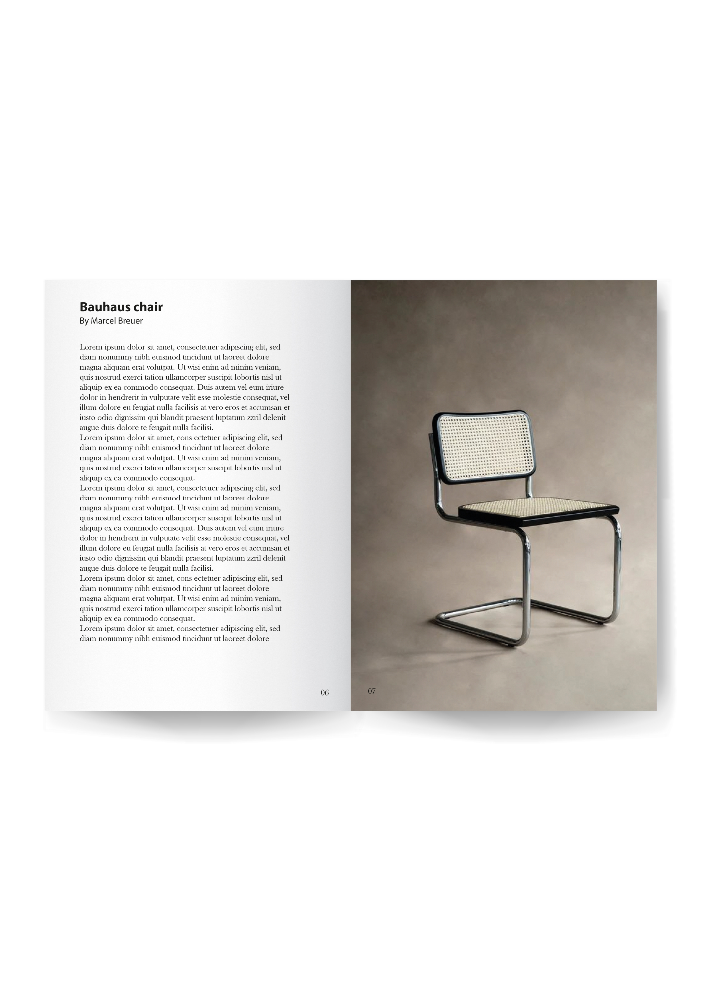
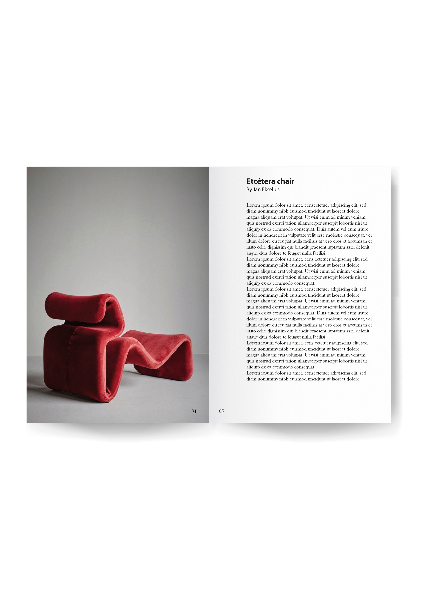
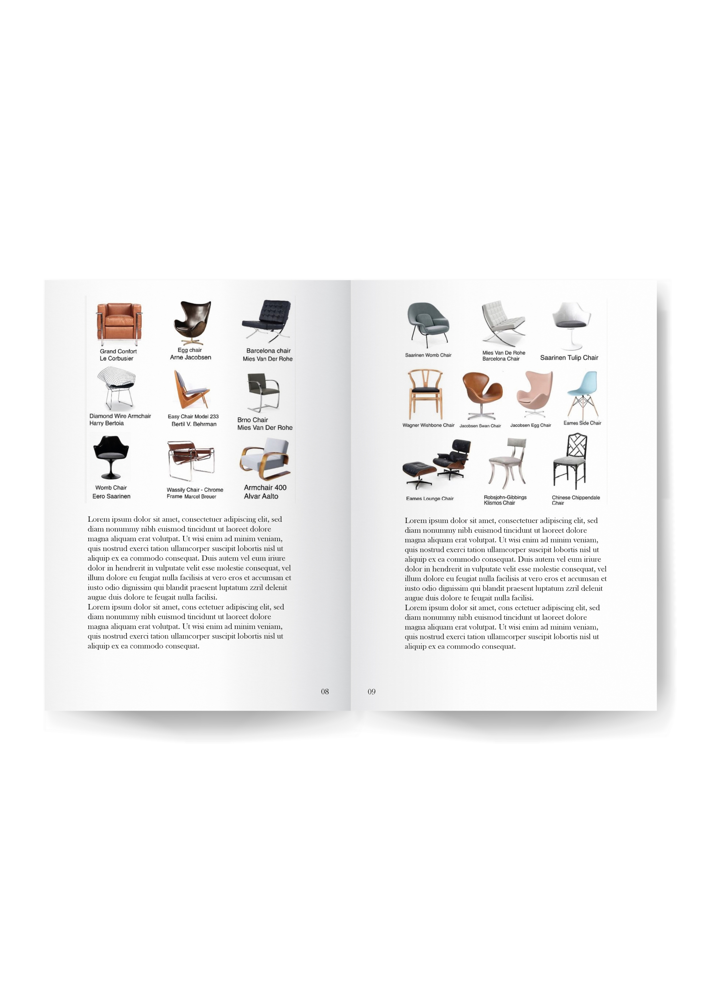

Esta colección de libros nace del interés por el interiorismo contemporáneo y el diseño de muebles como disciplina estética y funcional. Bajo el título Furniture Design, presento una serie de publicaciones editoriales que exploran el universo del mobiliario desde una mirada moderna, minimalista y cuidada.
Cada libro está pensado no solo como un catálogo de objetos, sino como una experiencia visual. La simplicidad del diseño editorial refleja los valores del interiorismo que lo inspira: orden, equilibrio, belleza en lo esencial. Las portadas limpias, la estructura clara y el uso comedido del color contribuyen a reforzar una identidad visual coherente y elegante. A través del diseño de esta colección, he querido resaltar el papel del libro como objeto: algo que se ve, se toca y se disfruta. La elección tipográfica, el ritmo de la maquetación y los blancos estratégicos están pensados para dar protagonismo a las piezas de mobiliario sin competir con ellas, potenciando su forma y presencia. El proyecto se alinea con mi estilo personal como diseñadora: sobrio, funcional y refinado, pero con una mirada atenta a los pequeños detalles. Cada página ha sido construida con intención, buscando una armonía entre contenido y forma, entre lo gráfico y lo espacial. Furniture Design no solo muestra muebles: propone una forma de mirar el diseño como estilo de vida. Es un ejercicio editorial que une estética y técnica, y que pone en valor el diseño de interiores como expresión de identidad, cultura y sensibilidad visual. Esta colección representa mi capacidad de trabajar con lenguaje editorial, dirección de arte y diseño gráfico aplicados a una temática concreta, desde una narrativa visual coherente y profesional.